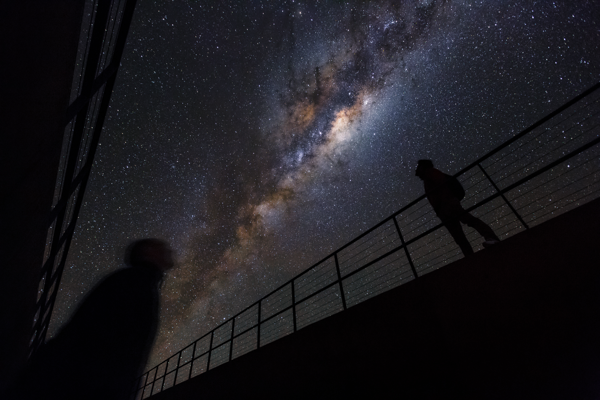

For my part, I know nothing with any certainty, but the sight of the stars makes me dream.
- Vincent Van Gogh -
Let's take a break
This project are made in hope that more people in this modern time where
everyone endlessly chasing worldly things like money, fame or something like that,
would take a moment to slow down and look up,
and realize how the world around us is full of beautiful, precious things.
(alay jir)(maaf enggak tau harus nulis apa)